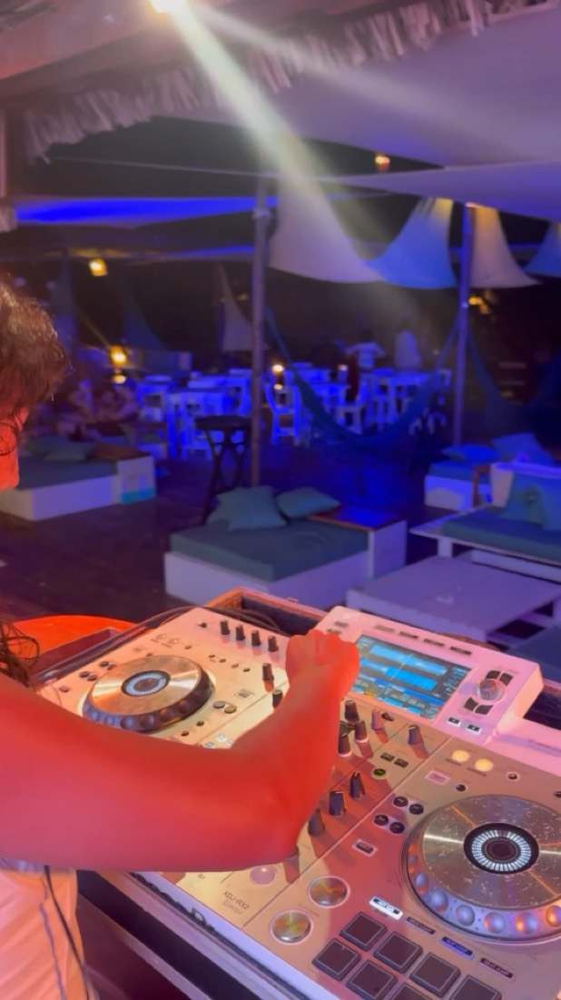
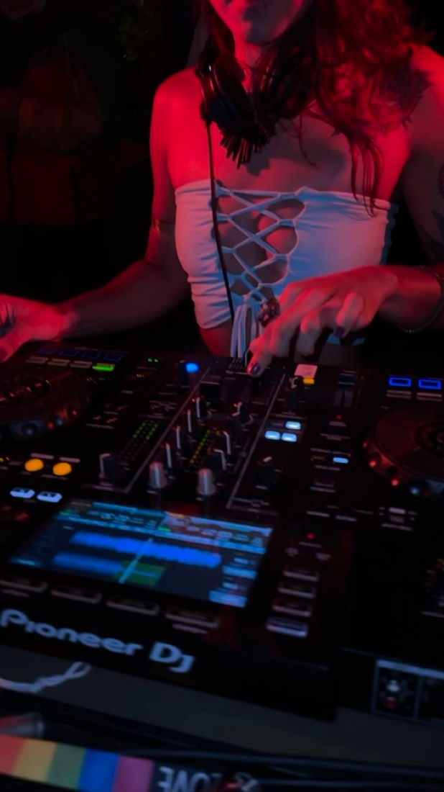
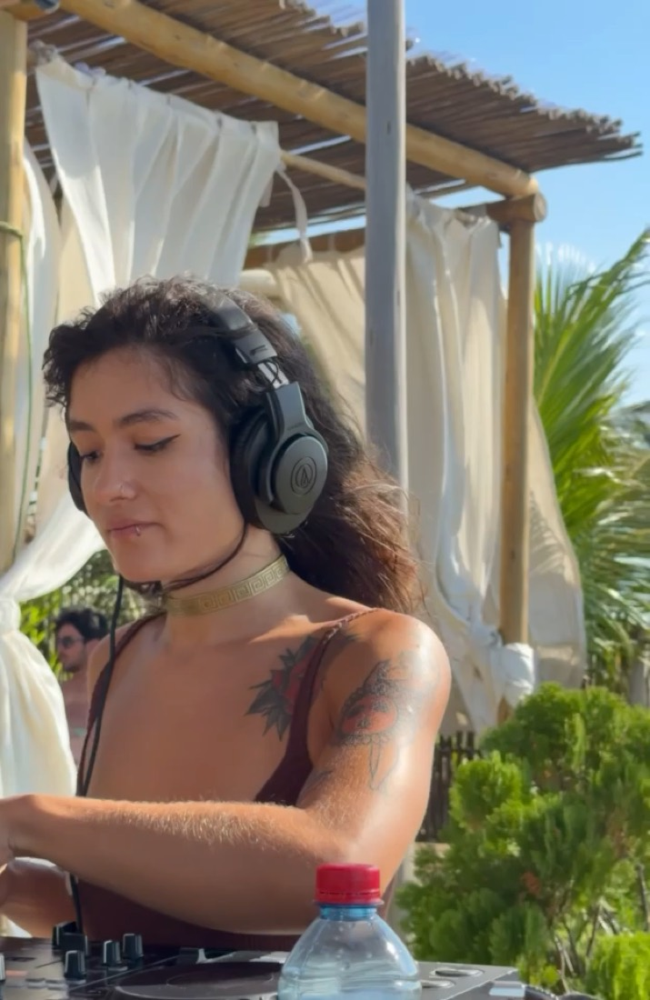
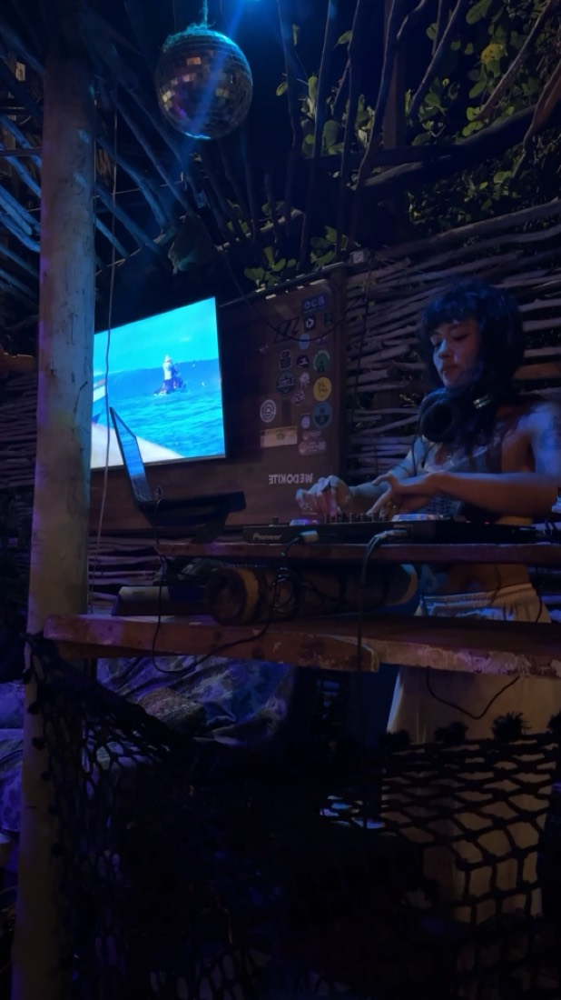
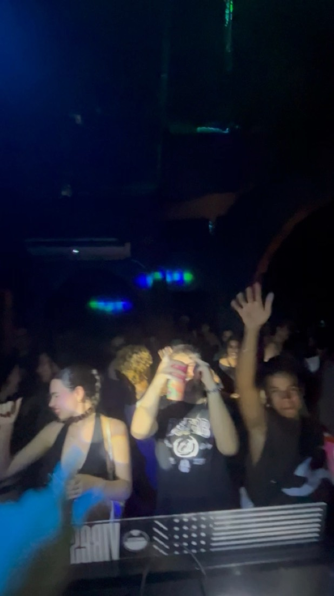

sobre
01 / 04
Britox é o projeto musical da DJ, jornalista e viajante capixaba Gabriela Brito. Sua pesquisa parte da música brasileira, mas não se limita a ela: costura vocais, percussões e elementos brasileiros à linguagem da pista, entre referências locais e globais.
Entre house, techno, funk, disco, boogie e grooves afrolatinos, Britox cria sets que atravessam referências locais e globais, costurando vocais, percussões e elementos da música brasileira à linguagem da pista.
A pesquisa se adapta à atmosfera: pode construir um sunset, acompanhar um ambiente mais contemplativo ou conduzir uma pista quente e dançante. Em diferentes intensidades, seus sets têm como fio condutor o groove, a presença vocal e a construção de uma experiência coletiva.
Capixaba e viajante, sua relação com o litoral, a cultura urbana e a música brasileira atravessa esse universo — sem se prender a um único gênero ou formato.
música
02 / 04
sets
todos os sets ↗ao vivo
03 / 04





trajetória
três estados · dezoito registros
04 / 04
Disponível para clubs, festivais, eventos privados, beach clubs e residências — Brasil & LATAM.